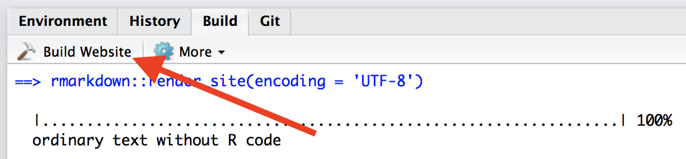
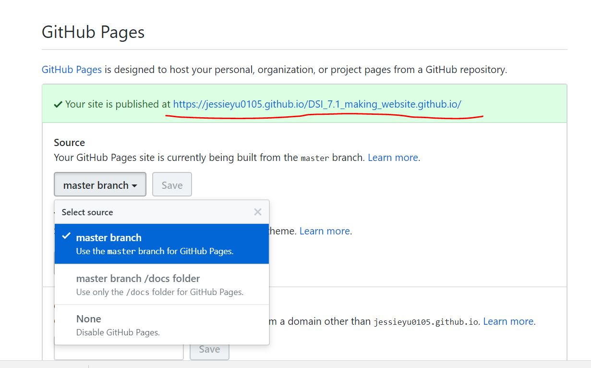

website_name.github.io.My Repo: jessieyu0105/DSI_7.1_making_website.github.io
Copy the files in website_template (D:/[CU_MS]/BIST 8105 - Data Science I/[R program]/[DSI]_7.1-Making websites.github.io/websote_template) to local directory
index.Rmd: 主页
about.Rmd: say a bit about the site – how it was made, where it’s hosted, where the source code can be found. Details about the R package versions that you used.
_site.yml：令index.Rmd生成的index.html更像website的关键
about.Rmd中编辑, knit生成about.htmlI like to look for code on the internet.
I can link directly to my about page.
images文件夹，图存于其中Ain’t she great:
Build button：

As noted, the preceding example is about a personal website but illustrates useful ideas. If you’re making a website about a data science project, I recommend including: